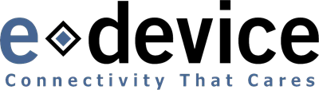
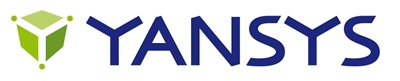
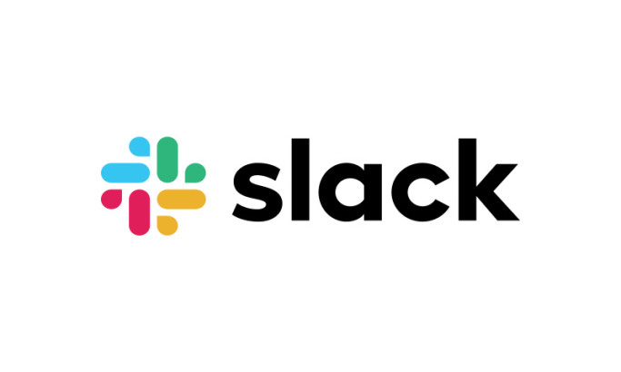
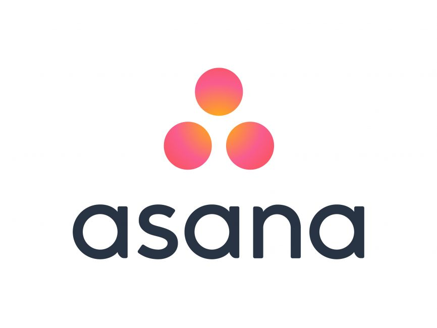

Contact me
Hi, I am Clément Torti
I am a
I am a
Technical Lead
Solutions Architect
Hi, I am Clément Torti
I am a
I am a
Technical Lead & Solutions Architect
Passionate about computer science, I enjoy exploring new technologies and designing refined architectural ecosystems that support the company's business goals and bring additional value to the products. I thrive on guiding and supporting my team to achieve its best and fostering a collaborative environment where innovation and continuous improvement are part of the culture.
Download my CV (pdf)

 speaking
speaking
What I do
Team Leadership
Effective team management by aligning members toward a common goal, fostering knowledge sharing, and leveraging organizational tools and efficient meetings.Market Analysis
Applying technology to drive business success by adding value to products and creating a competitive edge.Portfolio
All projects I worked on
My Resume
Experience
-
Nov 2023 - Present
Senior Developer Transneg Santo Domingo, Dominican Republic I co-lead national payment solution initiatives, with a strong focus on financial APIs and backend systems.
Missions:
- Supervise a small team of developers: assign tasks, offer support, and lead weekly meetings to ensure alignment and continuous delivery.
- Maintain, improve, and evolve financial systems—including a high traffic payment API for major corporations and government entities, as well as direct debit services, touch-based kiosk interfaces, and an online payment platform.
- Work extensively with RESTful and SOAP APIs in the financial domain, covering authentication flows, transaction processing, reconciliation, and audit logging.
- Help integrate platforms with acquiring networks such as CardNet and CyberSource (Visa), and with local banks like Banco BHD, ensuring secure and reliable payment experiences.
- Manage and support our AWS-based infrastructure, including EC2, VPN tunnels, pfSense firewall, and Cloudflare, maintaining performance and security.
- Oversee deployment and automation of software solutions to ensure high availability and seamless updates.
-
Dec 2020 - Sep 2023

IoT Developer/Tester (Apprenticeship) eDevice Bordeaux, France I worked at an IT company providing connectivity solutions to the healthcare industry. I was in charge of the design, development, and execution of automated test scripts for electronic boards and web applications. These boards were part of a patient hub that interfaces with various medical sensors and transmits the collected data to healthcare professionals. For my final-year project, I developed a web application for test script generation using a MEAN fullstack architecture.
Missions:
- Writing electronic board integration test scripts in Python.
- Development of a modern web application using MEAN architecture for writing Python test scripts.
- Writing Cypress web tests.
- Test acceptance, bug reporting, and documentation following a V cycle.
-
Apr 2019 - Jun 2019
Fullstack Developer (Internship) ECS Digital London, UK Rebranded GlobalLogic, a London-based digital transformation service company. I worked as part of a team to develop a web application used internally for peer reviews. I was involved in fullstack development using a MERN architecture. During this experience, I also discovered DevOps tools and received communication training in English.
Missions:
- Development of a fullStack web app from scratch according to DevOps principles.
- Technological watch for the project's new recruits, professional training, and client presentation in English. -
Jun 2018 - Jul 2018

Mobile Developer (Summer Job) Yansys Vichy, France Medical software company. I was in charge of the development of the mobile version of HurryCan, a web application for patient-doctor messaging. IOS development in swift within an agile team.
Missions:
- Development of a mobile application based on an existing web application.
- Integration into an agile team.
Education
-
2022 - 2023
Master's in Computer Science UCM Madrid, Spain UCM Madrid offers a prestigious Master's program in Computer Science. Located in Madrid, Spain, it provides a comprehensive curriculum covering theoretical knowledge and practical applications. Students gain advanced skills in software development, algorithms, AI, and data analysis. UCM's cutting-edge facilities and industry collaborations create an ideal learning environment.
-
2020 - 2023
Engineering Program in Computer Science INP ENSEEIHT, Toulouse, France Recognized as the 2nd best computer science engineering school in France, ENSEEIHT Toulouse offers a prestigious program through alternating work-study. Students develop technical skills in software development, algorithms, AI, and data analysis. Hands-on projects and internships prepare future engineers for success in the dynamic field of IT.
-
2017 - 2019
DUT in Computer Science IUT Clermont-Ferrand, France IUT Clermont-Ferrand is known for its excellent computer science training. Located in Aubière, France, it offers a practical curriculum aligned with industry trends. Students gain expertise in programming, web/mobile development, databases, networks, and information systems. Hands-on projects and internships foster a dynamic learning experience.
Acerca de Mí
Utilizo tecnologías modernas para mejorar mi trabajo como creadora de contenido y community manager, manteniéndome al día con las tendencias digitales y ofreciendo servicios de alta calidad. La integración de estas herramientas en mi flujo de trabajo optimiza la gestión de proyectos, la comunicación y la creación de contenido en plataformas como Facebook e Instagram. Con enfoque en la eficiencia e innovación, garantizo resultados sobresalientes en cada proyecto.

